import os
import numpy as np
from matplotlib import pyplot as plt
import librosa
from utils.plot_tools import *
from utils.feature_tools import smooth_downsample_feature_sequence, median_downsample_feature_sequence
from utils.structure_tools import read_structure_annotation
from utils.chord_tools import get_chord_labels, compute_chromagram_from_filename, compute_eval_measures, \
convert_chord_ann_matrix, chord_recognition_template
from utils.chord_tools import viterbi_log_likelihood, plot_matrix_chord_eval, uniform_transition_matrix6.4. 화음 인식 예시: 비틀즈
Chord Recognition Example: The Beatles
화음인식
간단한 예시로 비틀즈의 노래를 이용해 화음 인식 절차를 확인해보고, 결과를 해석해본다.
이 글은 FMP(Fundamentals of Music Processing) Notebooks을 참고로 합니다.
실험: 비틀즈 컬렉션
오디오 데이터, 주석
- 12개의 비틀즈 앨범 (180트랙)의 컬렉션
- 고품질의 참조 주석
- 화음, 비트, 음조 변화, 음악 구조
- 출처: [Christopher Harte’s PhD thesis (2010)] Isophonics Website
- 단 여기서는 24개의 화음 유형으로 축소
# Read annotation files
fn_ann_orig = '../data_FMP/FMP_C5_Audio_Beatles_LetItBe_Beatles_1970-LetItBe-06_Chords.csv'
fn_ann = '../data_FMP/FMP_C5_Audio_Beatles_LetItBe_Beatles_1970-LetItBe-06_Chords_simplified.csv'
ann_orig, _ = read_structure_annotation(fn_ann_orig)
ann, _ = read_structure_annotation(fn_ann)# Plot chord annotations
color_ann = {'N': 'white',
'C': 'red', 'C#': 'peru', 'D': 'orange', 'D#': 'yellow', 'Eb': 'yellow',
'E': 'springgreen', 'F': 'cyan', 'F#': 'coral', 'G': 'blue',
'G#': 'olive', 'A': 'teal', 'A#': 'indigo', 'Bb': 'indigo', 'B': 'pink',
'C#:min': 'steelblue', 'C#m': 'steelblue', 'A:min': 'greenyellow', 'A:m': 'greenyellow',
'G:min': 'olive', 'E:min': 'lightcoral', 'B:min': 'saddlebrown'}
chord_labels = get_chord_labels(ext_minor='m', nonchord=False)
plot_segments(ann_orig[:7], figsize=(12, 1.2), time_label='Time (seconds)',
fontsize=9, colors=color_ann, alpha=0.5)
plt.title('Reference annotations with original chord labels')
plt.show()
plot_segments(ann[:7], figsize=(12, 1.2), time_label='Time (seconds)',
fontsize=9, colors=color_ann, alpha=0.5)
plt.title('Reference annotations with reduced chord labels')
plt.show()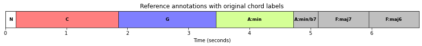
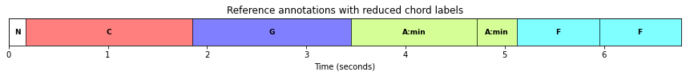
- 여기서는 4개의 노래만 예시로 보기로 한다. 무음이나 박수 소리같은 비음악적인 부분이 적은 노래들이다.
fn_wav1 = "../data_FMP/Beatles_Collection/FMP_C5_Audio_Beatles_LetItBe_Beatles_1970-LetItBe-06.wav"
fn_wav2 = "../data_FMP/Beatles_Collection/FMP_C5_Audio_Beatles_HereComesTheSun_Beatles_1969-AbbeyRoad-07.wav"
fn_wav3 = "../data_FMP/Beatles_Collection/FMP_C5_Audio_Beatles_ObLaDiObLaDa_Beatles_1968-TheBeatlesTheWhiteAlbumDisc1-04.wav"
fn_wav4 = "../data_FMP/Beatles_Collection/FMP_C5_Audio_Beatles_PennyLane_Beatles_1967-MagicalMysteryTour-09.wav"
fn_ann1 = "../data_FMP/Beatles_Collection/FMP_C5_Audio_Beatles_LetItBe_Beatles_1970-LetItBe-06_Chords_simplified.csv"
fn_ann2 = "../data_FMP/Beatles_Collection/FMP_C5_Audio_Beatles_HereComesTheSun_Beatles_1969-AbbeyRoad-07_Chords_simplified.csv"
fn_ann3 = "../data_FMP/Beatles_Collection/FMP_C5_Audio_Beatles_ObLaDiObLaDa_Beatles_1968-TheBeatlesTheWhiteAlbumDisc1-04_Chords_simplified.csv"
fn_ann4 = "../data_FMP/Beatles_Collection/FMP_C5_Audio_Beatles_PennyLane_Beatles_1967-MagicalMysteryTour-09_Chords_simplified.csv"song_dict = {} # song name, color, wav filename, annotation filename
song_dict[0] = ['Let It Be', 'r', fn_wav1, fn_ann1]
song_dict[1] = ['Here Comes The Sun', 'b', fn_wav2, fn_ann2]
song_dict[2] = ['Ob-La-Di Ob-La-Da', 'c', fn_wav3, fn_ann3]
song_dict[3] = ['Penny Lane', 'g', fn_wav4, fn_ann4]
chord_labels = get_chord_labels(ext_minor='m', nonchord=False)
song_selected = [0, 1, 2, 3]
for s in song_selected:
song_id = song_dict[s][0]
fn_ann = song_dict[s][3]
fn_ann_orig = fn_ann.replace('_simplified','')
ann_orig, _ = read_structure_annotation(fn_ann_orig)
ann, _ = read_structure_annotation(fn_ann)
plot_segments(ann_orig[:30], figsize=(12, 1),
fontsize=9, colors=color_ann, alpha=0.5)
plt.title('Song: %s' % song_id)
plt.show()
plot_segments(ann[:30], figsize=(12, 1.2), time_label='Time (seconds)',
fontsize=9, colors=color_ann, alpha=0.5)
plt.show()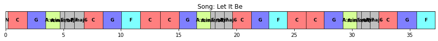
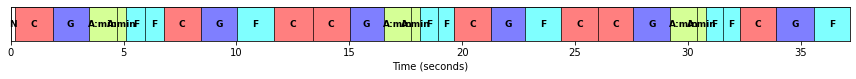
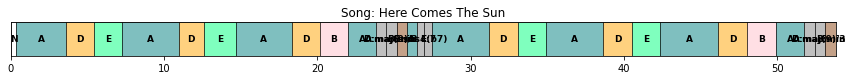
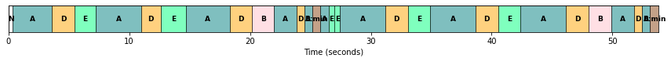
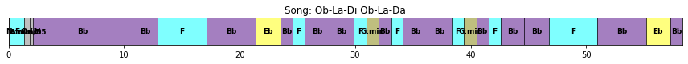
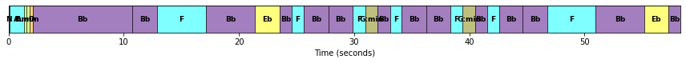
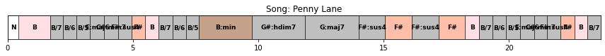
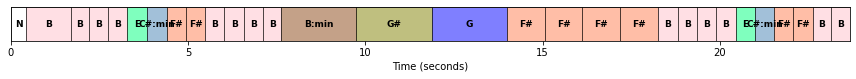
특징 추출 (Feature Extraction)
전통적인 화음 인식 접근 방식의 첫 번째 단계는 오디오 녹음을 크로마(chroma) 기반 오디오 특징(feature)의 시퀀스로 변환하는 것이다.
이러한 특징은 적절한 스무딩(smoothing) 필터를 적용하여 시간적(temporal) 이상값을 고르게 하거나, 로그 압축(logarithmic compression)을 적용하여 작지만 지각적으로 관련된 스펙트럼 구성 요소(spectral components)를 향상시키는 등 추가로 처리될 수 있다.
사용된 크로마 유형은 Jiang et al.에 의해 입증된 것처럼, 화음 인식 결과에 큰 영향을 미칠 수 있다.
librosa에서 제공하는 세 가지 다른 크로마 유형을 고려하여 이 사실을 설명한다.- 작은 로그 압축을 사용하는 STFT 기반 크로마 특징(
librosa.feature.chroma_stft) - CQT 기반 크로마 특징(
librosa.feature.chroma_cqt) - 로그 압축을 사용한 IIR 기반 크로마 특징(
librosa.iirt+ 크로마 비닝(binning))
- 작은 로그 압축을 사용하는 STFT 기반 크로마 특징(
오디오 녹음은 \(F_\mathrm{s}=22050~\mathrm{Hz}\)의 rate으로 샘플링된다.
- STFT 계산을 위해서는 \(N=2048\) 샘플(\(92.9~\mathrm{ms}\)에 해당)의 윈도우(window) 크기와 \(H=1024\) 샘플(\(46.4~\mathrm{ms}\)에 해당)의 홉 크기를 사용한다. 이는 \(21.5~\mathrm{Hz}\)의 feature rate으로 이어진다.
- 또한 IIR 기반 주파수 표현을 계산하기 위해 동일한 매개변수 \(N\) 및 \(H\)를 사용한다.
- 마지막으로 CQT의 경우 동일한 홉 크기 \(H=1024\)를 사용하여 동일한 feature rate의 크로마 표현을 생성한다.
모든 크로마 특징은 유클리드 norm에 따라 정규화된다. 또한 크로마 시퀀스와 일치하도록 화음 주석을 프레임-수준 라벨 시퀀스로 변환한다.
def compute_X_dict(song_selected, version='STFT', details=True):
X_dict = {}
Fs_X_dict = {}
ann_dict = {}
x_dur_dict = {}
chord_labels = get_chord_labels(ext_minor='m', nonchord=False)
for s in song_selected:
if details is True:
print('Processing: ', song_dict[s][0])
fn_wav = song_dict[s][2]
fn_ann = song_dict[s][3]
N = 2048
H = 1024
if version == 'STFT':
X, Fs_X, x, Fs, x_dur = \
compute_chromagram_from_filename(fn_wav, N=N, H=H, gamma=0.1, version='STFT')
if version == 'CQT':
X, Fs_X, x, Fs, x_dur = \
compute_chromagram_from_filename(fn_wav, H=H, version='CQT')
if version == 'IIR':
X, Fs_X, x, Fs, x_dur = \
compute_chromagram_from_filename(fn_wav, N=N, H=H, gamma=10, version='IIR')
X_dict[s] = X
Fs_X_dict[s] = Fs_X
x_dur_dict[s] = x_dur
N_X = X.shape[1]
ann_dict[s] = convert_chord_ann_matrix(fn_ann, chord_labels, Fs=Fs_X, N=N_X, last=False)
return X_dict, Fs_X_dict, ann_dict, x_dur_dict, chord_labelssong_selected = [0, 1, 2, 3]
print('===== Computation of STFT-based chromagrams =====')
X_dict_STFT, Fs_X_dict_STFT, ann_dict_STFT, x_dur_dict, chord_labels = compute_X_dict(song_selected, version='STFT')
print('===== Computation of CQT-based chromagrams =====')
X_dict_CQT, Fs_X_dict_CQT, ann_dict_CQT, x_dur_dict, chord_labels = compute_X_dict(song_selected, version='CQT')
print('===== Computation of IIR-based chromagrams =====')
X_dict_IIR, Fs_X_dict_IIR, ann_dict_IIR, x_dur_dict, chord_labels = compute_X_dict(song_selected, version='IIR')
print()===== Computation of STFT-based chromagrams =====
Processing: Let It Be
Processing: Here Comes The Sun
Processing: Ob-La-Di Ob-La-Da
Processing: Penny Lane
===== Computation of CQT-based chromagrams =====
Processing: Let It Be
Processing: Here Comes The Sun
Processing: Ob-La-Di Ob-La-Da
Processing: Penny Lane
===== Computation of IIR-based chromagrams =====
Processing: Let It Be
Processing: Here Comes The Sun
Processing: Ob-La-Di Ob-La-Da
Processing: Penny Lane
맨 앞 15초만 보자.
cmap = 'gray_r'
for s in song_selected:
fig, ax = plt.subplots(1, 3, gridspec_kw={'width_ratios': [1, 1, 1],
'height_ratios': [2]}, figsize=(10, 2.5))
title = '%s, STFT (%0.1f Hz)' % (song_dict[s][0], Fs_X_dict_STFT[s])
plot_chromagram(X_dict_STFT[s], Fs=Fs_X_dict_CQT[s], ax=[ax[0]],
chroma_yticks=[0, 4, 7, 11], clim=[0, 1], cmap=cmap,
title=title, ylabel='Chroma', colorbar=True, xlim=[0, 15])
title = '%s, CQT (%0.1f Hz)' % (song_dict[s][0], Fs_X_dict_CQT[s])
plot_chromagram(X_dict_CQT[s], Fs=Fs_X_dict_CQT[s], ax=[ax[1]],
chroma_yticks=[0, 4, 7, 11], clim=[0, 1], cmap=cmap,
title=title, ylabel='Chroma', colorbar=True, xlim=[0, 15])
title = '%s, IIR (%0.1f Hz)' % (song_dict[s][0], Fs_X_dict_IIR[s])
plot_chromagram(X_dict_IIR[s], Fs=Fs_X_dict_IIR[s], ax=[ax[2]],
chroma_yticks=[0, 4, 7, 11], clim=[0, 1], cmap=cmap,
title=title, ylabel='Chroma', colorbar=True, xlim=[0, 15])
plt.tight_layout() 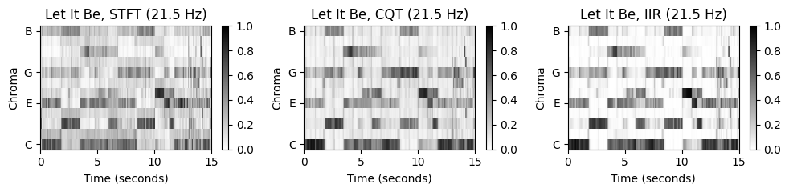
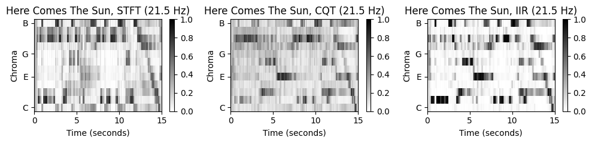
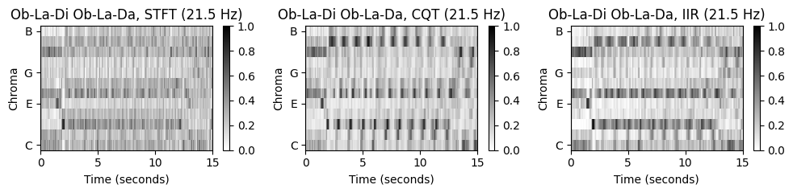
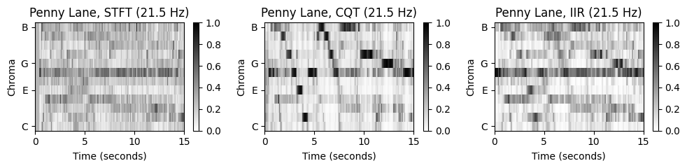
“Let It Be”의 경우 세 크로마그램이 비슷하지만, 나머지 노래들은 꼭 그렇지 않다. 특히 “Penny Lane”은 STFT기반 크로마그램에서 동질적인 모습(\(\mathrm{F}\) 크로마 밴드)을 보이지만, 나머지 특히 CQT기반 크로마그램에서는 하향하는 지배 패턴을 보인다.
노래를 들어보면 베이스 기타가 연주하는 저주파수(low-frequency)의 강한 베이스라인이 있다. STFT의 선형 주파수 분해능(linear frequency resolution)에 기반하면 저주파수의 정보가 잘 포착되지 않는다. 결과적으로 크로마그램을 얻기 위해 로그 비닝(logarithmic binning)을 적용하면 이러한 정보들을 잃게 된다(서로 다른 피치 밴드를 오염시킴).
반면에 CQT는 frequency-dependent한 윈도우 크기를 사용하여 신호를 로그 주파수 해상도(logarithmic frequency resolution)으로 시간-주파수 표현으로 분해한다. 결과적으로 저주파수 음이 STFT보다 훨씬 높은 스펙트럼 해상도로 포착된다.
화음 인식 절차 (Chord Recognition Procedures)
- 세 새긩 크로마그램 표현에 기반하여, 크로마 특징을 24 장단화음 라벨로 매핑하는 두 가지의 패턴 매칭 기술을 적용한다.
- 템플릿 기반 화음 인식 (Template-based chord recognition)
- HMM 기반 화음 인식 (HMM-based chord recognition)
- 시간-화음(time-chord) 시각화를 통해 결과를 보자. 우선 “Let It Be”의 6가지 조합(3개의 크로마그램, 2개의 화음 인식)을 본다.
def chord_recognition_all(X, ann_matrix, p=0.15, filt_len=None, filt_type='mean'):
"""Conduct template- and HMM-based chord recognition and evaluates the approaches
Args:
X (np.ndarray): Chromagram
ann_matrix (np.ndarray): Reference annotation as given as time-chord binary matrix
p (float): Self-transition probability used for HMM (Default value = 0.15)
filt_len (int): Filter length used for prefilitering (Default value = None)
filt_type (str): Filter type used for prefilitering (Default value = 'mean')
Returns:
result_Tem (tuple): Chord recogntion evaluation results ([P, R, F, TP, FP, FN]) for template-based approach
result_HMM (tuple): Chord recogntion evaluation results ([P, R, F, TP, FP, FN]) for HMM-based approach
chord_Tem (np.ndarray): Template-based chord recogntion result given as binary matrix
chord_HMM (np.ndarray): HMM-based chord recogntion result given as binary matrix
chord_sim (np.ndarray): Chord similarity matrix
"""
if filt_len is not None:
if filt_type == 'mean':
X, Fs_X = smooth_downsample_feature_sequence(X, Fs=1, filt_len=filt_len, down_sampling=1)
if filt_type == 'median':
X, Fs_X = median_downsample_feature_sequence(X, Fs=1, filt_len=filt_len, down_sampling=1)
# Template-based chord recogntion
chord_sim, chord_Tem = chord_recognition_template(X, norm_sim='1')
result_Tem = compute_eval_measures(ann_matrix, chord_Tem)
# HMM-based chord recogntion
A = uniform_transition_matrix(p=p)
C = 1 / 24 * np.ones((1, 24))
B_O = chord_sim
chord_HMM, _, _, _ = viterbi_log_likelihood(A, C, B_O)
result_HMM = compute_eval_measures(ann_matrix, chord_HMM)
return result_Tem, result_HMM, chord_Tem, chord_HMM, chord_sim
def plot_chord_recognition_result(ann_matrix, result, chord_matrix, chord_labels,
xlim=None, Fs_X=1, title='', figsize=(12, 4)):
P, R, F, TP, FP, FN = result
method='HMM'
title = title + ' (TP=%d, FP=%d, FN=%d, P=%.3f, R=%.3f, F=%.3f)' % (TP, FP, FN, P, R, F)
fig, ax, im = plot_matrix_chord_eval(ann_matrix, chord_matrix, Fs=Fs_X, figsize=figsize,
title=title, ylabel='Chord', xlabel='Time (frames)', chord_labels=chord_labels)
if xlim is not None:
plt.xlim(xlim)
plt.tight_layout()
plt.show()song_selected = [0] # 렛잇비
for s in song_selected:
output = chord_recognition_all(X_dict_STFT[s], ann_dict_STFT[s][0], p=0.15)
result_Tem, result_HMM, chord_Tem, chord_HMM, chord_sim = output
title = 'Song: %s [STFT; Template]' % song_dict[s][0]
plot_chord_recognition_result(ann_dict_STFT[s][0], result_Tem, chord_Tem, chord_labels, title=title)
title = 'Song: %s [STFT; HMM]' % song_dict[s][0]
plot_chord_recognition_result(ann_dict_STFT[s][0], result_HMM, chord_HMM, chord_labels, title=title)
output = chord_recognition_all(X_dict_CQT[s], ann_dict_CQT[s][0], p=0.15)
result_Tem, result_HMM, chord_Tem, chord_HMM, chord_sim = output
title = 'Song: %s [CQT; Template]' % song_dict[s][0]
plot_chord_recognition_result(ann_dict_CQT[s][0], result_Tem, chord_Tem, chord_labels, title=title)
title = 'Song: %s [CQT; HMM]' % song_dict[s][0]
plot_chord_recognition_result(ann_dict_STFT[s][0], result_HMM, chord_HMM, chord_labels, title=title)
output = chord_recognition_all(X_dict_IIR[s], ann_dict_IIR[s][0], p=0.15)
result_Tem, result_HMM, chord_Tem, chord_HMM, chord_sim = output
title = 'Song: %s [IIR; Template]' % song_dict[s][0]
plot_chord_recognition_result(ann_dict_STFT[s][0], result_Tem, chord_Tem, chord_labels, title=title)
title = 'Song: %s [IIR; HMM]' % song_dict[s][0]
plot_chord_recognition_result(ann_dict_IIR[s][0], result_HMM, chord_HMM, chord_labels, title=title) 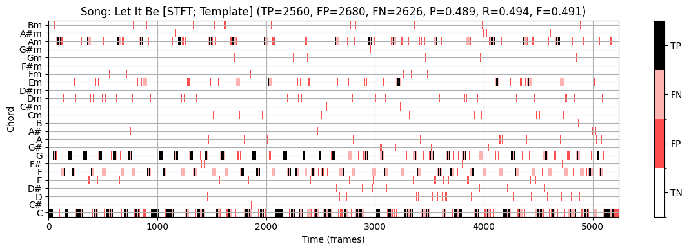
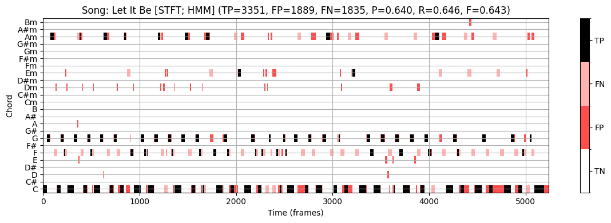
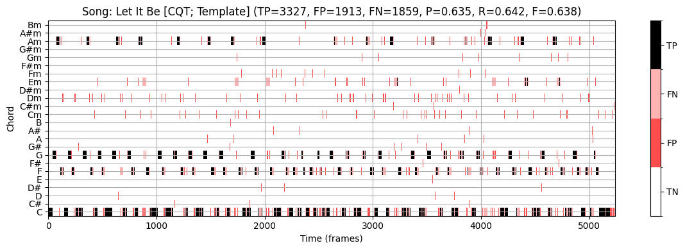
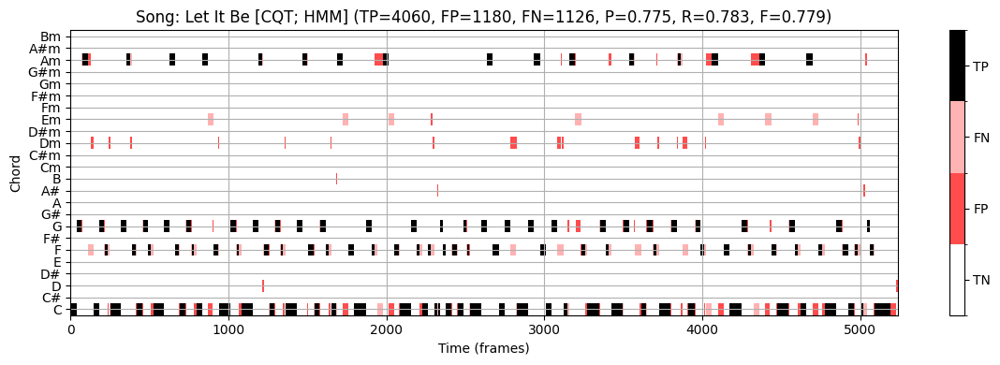
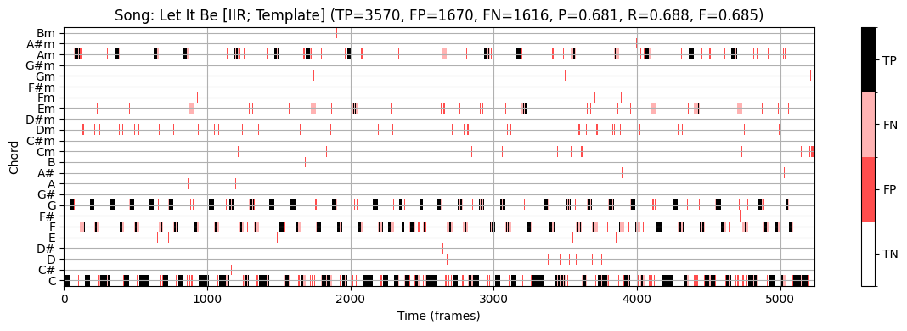
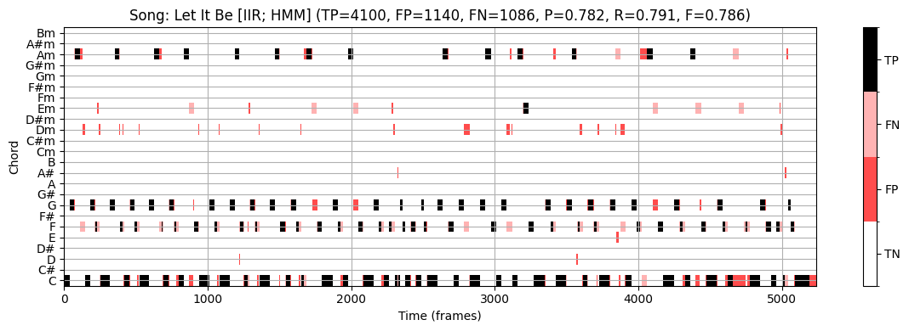
STFT 기반 크로마그램과 템플렛 기반 화음 인식을 사용하면 F-스코어 \(\mathrm{F}=0.491\)을 얻는다.
- 화음 라벨 사이의 갑작스런 점프들이 있는 것을 볼 수 있다.
HMM 기반 방식을 사용하면 이상치를 줄여 F-스코어를 올린다. (\(\mathrm{F}=0.643\))
CQT 기반 크로마그램을 input으로 하면 결과는 상당히 개선된다. (\(\mathrm{F}=0.779\))
가장 좋은 결과는 “IIR 기반 크로마그램 + HMM 기반 화음 인식” 이다. (\(\mathrm{F}=0.789\))
이제 CQT크로마그램 + HMM 화음 인식 을 사용해 네 노래의 인식 결과를 보자.
# 전체
song_selected = [0, 1, 2, 3]
for s in song_selected:
output = chord_recognition_all(X_dict_CQT[s], ann_dict_CQT[s][0], p=0.15)
result_Tem, result_HMM, chord_Tem, chord_HMM, chord_sim = output
title='Song: %s [CQT; HMM]' % song_dict[s][0]
plot_chord_recognition_result(ann_dict_STFT[s][0], result_HMM, chord_HMM, chord_labels, title=title,)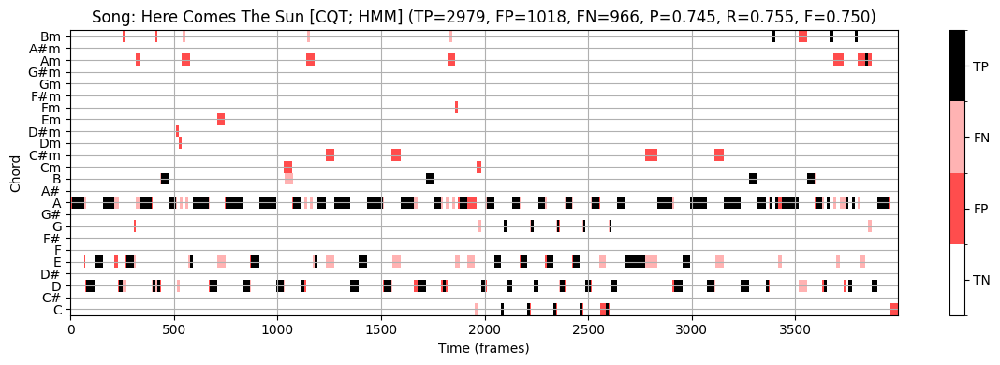
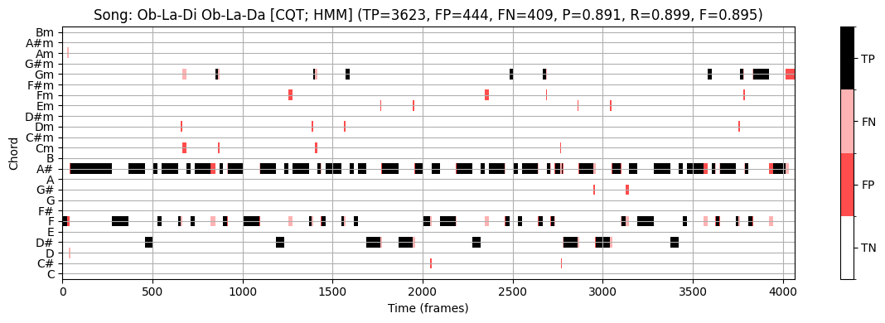
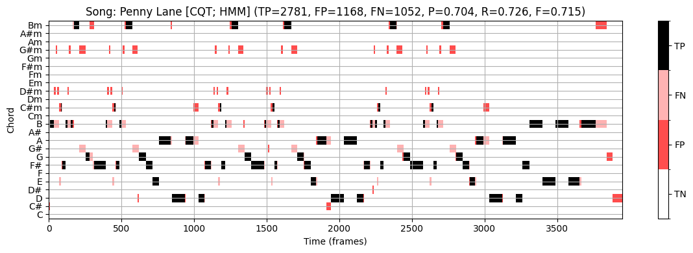
Let It Be:
- \(\mathrm{F}=0.779\)
Here Comes The Sun:
- \(\mathrm{F}=0.750\)
Ob-La-Di Ob-La-Da:
- \(\mathrm{F}=0.895\)
PennyLane:
- \(\mathrm{F}=0.715\)
Average:
- \(\mathrm{F}=0.785\)
참고로 전체 비틀즈 180노래에 대한 F스코어의 평균도 위와 비슷하다.
최신의 data-driven 화음 인식 방법 (예: deep neural network)은 80에서 90퍼센트 사이의 점수를 보인다. 하지만 일반적으로 이러한 숫자는 데이터셋의 복잡성, 모델 가정의 적절성, 주석의 신뢰성 및 결과의 음악적 의미에 대한 제한된 통찰력만 제공하므로 주의해야 한다. 노트북의 뒷부분에서 그러한 평가 점수의 음악적 관련성에 대해 다시 설명하기로 한다.
사전 필터링(Prefiltering) 실험
위에서 특징(feature)유형이 화음 인식 결과에 큰 영향을 미치는 것을 볼 수 있었다. 마찬가지로 STFT 윈도우 크기를 확대하면 화음 인식의 동작에 상당한 영향을 미칠 수 있다. 각 크로마 차원에 대해 시간 경과에 따른 일종의 local 평균을 계산하는 temporal smoothing를 적용할 때 유사한 효과를 얻을 수 있다.
이제 \(21.5~\mathrm{Hz}\)의 feature rate를 갖는 세 가지 크로마그램 표현(
STFT,CQT,IIR)으로 시작하여 화음 인식 정확도에 대한 temporal smoothing의 효과를 확인해본다.\(L\in\mathbb{N}\)를 스무딩 필터의 길이(프레임 단위로 측정)라고 하자. 스무딩을 위해 각각 평균 또는 중앙값을 사용하는 두 함수 중 하나를 적용하여 중심(centered) 방식으로 평균을 계산한다.
다운샘플링을 적용하지 않으므로 원래 feature rate를 \(21.5~\mathrm{Hz}\)로 유지한다.
다음에서는 스무딩 매개변수 \(L\in\{1,3,5\ldots,63,65\}\)의 sweep을 고려한다. 예를 들어 \(L=21\) 매개변수는 오디오 녹음의 약 1초에 해당한다. 스무딩은 실제 패턴 매칭 전에 적용되므로 이 단계를 사전 필터링(prefiltering)이라고 한다.
def compute_mean_result(result_dict, song_selected):
S = len(song_selected)
result_mean = np.copy(result_dict[song_selected[0]])
for s in range(1, S):
result_mean = result_mean + result_dict[song_selected[s]]
result_mean = result_mean / S
return result_mean
def plot_statistics(para_list, song_dict, song_selected, result_dict, ax,
ylim=None, title='', xlabel='', ylabel='F-measure', legend=True):
for s in song_selected:
color = song_dict[s][1]
song_id = song_dict[s][0]
ax.plot(para_list, result_dict[s], color=color,
linestyle=':', linewidth='2', label=song_id)
ax.plot(para_list, compute_mean_result(result_dict, song_selected), color='k',
linestyle='-',linewidth='2', label='Mean')
if legend==True:
ax.legend(loc='upper right', fontsize=8).get_frame().set_alpha(.6)
ax.set_title(title)
ax.set_xlabel(xlabel)
ax.set_ylabel(ylabel)
ax.grid()
if ylim is not None:
ax.set_ylim(ylim)
ax.set_xlim([para_list[0], para_list[-1]])
def experiment_chord_recognition(song_selected, song_dict, X_dict, ann_dict,
para_list, para_type=None, p=0.15,
filt_len=None, filt_type='mean', detail=True):
M = len(para_list)
result_F_Tem = np.zeros(M)
result_F_HMM = np.zeros(M)
result_F_Tem_dict = {}
result_F_HMM_dict = {}
for s in song_selected:
if detail is True:
print('Processing:', song_dict[s][0])
for m in range(M):
if para_type == 'smooth':
filt_len = para_list[m]
if para_type == 'p':
p = para_list[m]
output = chord_recognition_all(X_dict[s], ann_dict[s][0],
filt_len=filt_len, filt_type=filt_type, p=p)
result_Tem, result_HMM, chord_Tem, chord_HMM, chord_sim = output
result_F_Tem[m] = result_Tem[2]
result_F_HMM[m] = result_HMM[2]
result_F_Tem_dict[s] = np.copy(result_F_Tem)
result_F_HMM_dict[s] = np.copy(result_F_HMM)
print()
return result_F_Tem_dict, result_F_HMM_dict- 4곡 각각에 대해 평활(smoothing) 매개변수 \(L\)에 따른 \(\mathrm{F}\)스코어를 보여주는 평가 곡선을 계산한다. 또한, 4곡의 평균 곡선이 표시된다. 세 가지 크로마그램(
STFT,CQT,IIR)과 두 개의 화음 인식기(템플릿,HMM)에 대한 곡선을 본다.
song_selected = [0, 1, 2, 3]
para_list = np.arange(32) * 2 + 1
print('===== Prefiltering experiment using STFT-based chromagrams =====')
result_STFT = experiment_chord_recognition(song_selected, song_dict, X_dict_STFT,
ann_dict_STFT, para_list, para_type='smooth',
p=0.15, filt_len=None, filt_type='mean')
print('===== Prefiltering experiment using CQT-based chromagrams =====')
result_CQT = experiment_chord_recognition(song_selected, song_dict, X_dict_CQT,
ann_dict_CQT, para_list, para_type='smooth',
p=0.15, filt_len=None, filt_type='mean')
print('===== Prefiltering experiment using IIR-based chromagrams =====')
result_IIR = experiment_chord_recognition(song_selected, song_dict, X_dict_IIR,
ann_dict_IIR, para_list, para_type='smooth',
p=0.15, filt_len=None, filt_type='mean')===== Prefiltering experiment using STFT-based chromagrams =====
Processing: Let It Be
Processing: Here Comes The Sun
Processing: Ob-La-Di Ob-La-Da
Processing: Penny Lane
===== Prefiltering experiment using CQT-based chromagrams =====
Processing: Let It Be
Processing: Here Comes The Sun
Processing: Ob-La-Di Ob-La-Da
Processing: Penny Lane
===== Prefiltering experiment using IIR-based chromagrams =====
Processing: Let It Be
Processing: Here Comes The Sun
Processing: Ob-La-Di Ob-La-Da
Processing: Penny Lane
# Plot result
fig, ax = plt.subplots(2, 3, figsize=(12, 8))
xlabel='Smoothing length (frames)'
ylim = [0.3, 1]
title='STFT, Template'
plot_statistics(para_list, song_dict, song_selected, result_STFT[0], ax[0, 0],
ylim=ylim, title=title, xlabel=xlabel)
title='STFT, HMM'
plot_statistics(para_list, song_dict, song_selected, result_STFT[1], ax[1, 0],
ylim=ylim, title=title, xlabel=xlabel)
title='CQT, Template'
plot_statistics(para_list, song_dict, song_selected, result_CQT[0], ax[0, 1],
ylim=ylim, title=title, xlabel=xlabel)
title='CQT, HMM'
plot_statistics(para_list, song_dict, song_selected, result_CQT[1], ax[1, 1],
ylim=ylim, title=title, xlabel=xlabel)
title='IIR, Template'
plot_statistics(para_list, song_dict, song_selected, result_IIR[0], ax[0, 2],
ylim=ylim, title=title, xlabel=xlabel)
title='IIR, HMM'
plot_statistics(para_list, song_dict, song_selected, result_IIR[1], ax[1, 2],
ylim=ylim, title=title, xlabel=xlabel)
plt.tight_layout() 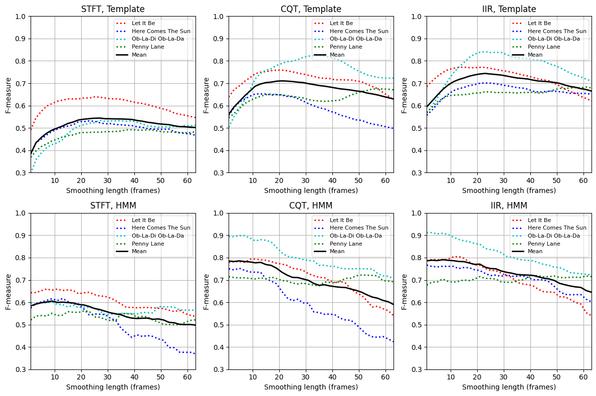
STFT 경우와 템플릿 기반 화음 인식기에서 F-measure는 \(L=1\)에서 \(\mathrm{F}=0.39\)이다. \(L\)가 증가함에 따라 향상되고 \(20\)에서 \(30\) 사이 \(L\)에 대해 대략 \(\mathrm{F}=0.55\)의 최대값에 도달한다. 그런 다음 \(L\)를 더 올리면 다시 감소한다. CQT 기반 및 IIR 기반 크로마그램을 사용할 때도 유사한 경향을 관찰할 수 있다.
모든 경우(
STFT,CQT,IIR)에서 스무딩은 특징의 시간 변동(temporal fluctuations) 및 로컬 이상값(local outliers)을 제거하여 프레임별 분류 결과를 개선한다. 또한 스무딩은 음악적으로 동일한 화음에 속하는 비동기 음(nonsynchronous notes)을 통합할 수 있다. 반면에 스무딩은 시간 해상도 (temporal resolution)를 감소시키고 인식기가 짧은 듀레이션의 화음을 감지하지 못하게 할 수 있다.비틀즈 노래의 경우 오디오의 약 1~2초에 해당하는 스무딩 윈도우는 이상값에 대한 견고성 증가와 시간 해상도 감소 사이에서 적절한 절충안으로 보인다. 그러나 이 trade-off는 실험에 사용된 기본 오디오 자료의 화음 변화 속도에 크게 의존한다.
HMM 기반 화음 인식기의 경우 특징의 시간적 스무딩은 화음 인식 정확도에 덜 중요하거나 심지어 부정적인 영향을 미친다. 이미 분류 단계에서 일부 사후 필터링(postfiltering) 을 통합한다. 따라서 분류에 앞서 추가적인 평활화는 전체 인식 결과를 더 이상 개선하지 않는다.
자기 전이 확률 (Self-Transition Probability)
HMM 기반 사후필터링의 맥락에서 Cho and Bello는 연구에서 자기 전이 확률(self-transition probability) 의 중요성을 강조했다.
\(\mathbf{C}\)에서 \(\mathbf{G}\)로의 전환과 같이 음악적으로 두드러진 특정 전환의 강화(예: 으뜸음-딸림음 관계 표현)가 음악적으로 의미 있는 특정 화음의 증폭으로 이어질 수 있지만, 주요 개선은 기본적으로 화음 변경 횟수를 줄이는 높은 자기 전이 확률로부터 얻는다.
균일 전리 확률 행렬을 사용할 수 있다. 이 행렬에서는 자기 전환을 제외하고 모든 전환에 동일한(상대적으로 작은) 확률 값이 할당된다. Cho and Bello의 연구에 따르면, 이 균일한 전이 확률 행렬을 사용하더라도 더 복잡한 전이 확률 행렬을 사용할 때와 유사한 개선을 얻을 수 있다.
균일 전리 확률 행렬을 정의하려면 주대각선으로 인코딩된 자기 전이에 사용되는 매개변수 \(p\in[0,1]\)를 지정해야 한다. 대각선이 아닌 확률은 다음과 같이 지정된다. \[q = \frac{1-p}{I}\] 여기서 \(I\)는 HMM 상태(state)의 수이다(이 시나리오에서는 \(I=24\)임).
다음 코드 셀에서 자기-전이 매개변수 \(p\in[0, 0.02, 0.04, \ldots, 0.98, 1]\)의 스윕(sweep)을 고려하는 작은 실험을 제시한다.
관찰할 수 있듯이 \(p\approx0.22\)(STFT 기반 크로마그램 사용 시)에 대해 대략 \(\mathrm{F}=0.60\), \(p\approx0.18\)(CQT 기반 및 IIR 기반 크로마그램 사용 시)에 대해 \(\mathrm{F}=0.80\)를 얻는다.
\(p\) 매개변수는 예상되는 화음 변화율과 관련된 속성을 반영하며, 이는 화음 주석들의 통계 및 사용된 feature rate에 크게 의존한다. 데이터 기반 기계 학습에서 자기 전환 매개변수는 독립적인 validation set를 사용하여 최적화할 수 있는 hyperparameter로 간주할 수 있다.
song_selected = [0, 1, 2, 3]
para_list = (np.arange(51)) * 0.02
print('===== Self-transition probability experiment using STFT-based chromagrams =====')
result_STFT = experiment_chord_recognition(song_selected, song_dict, X_dict_STFT, ann_dict_STFT,
para_list, para_type='p', p=0.15, filt_len=None)
print('===== Self-transition probability experiment using CQT-based chromagrams =====')
result_CQT = experiment_chord_recognition(song_selected, song_dict, X_dict_CQT, ann_dict_CQT,
para_list, para_type='p', p=0.15, filt_len=None)
print('===== Self-transition probability experiment using IIR-based chromagrams =====')
result_IIR = experiment_chord_recognition(song_selected, song_dict, X_dict_IIR, ann_dict_IIR,
para_list, para_type='p', p=0.15, filt_len=None)
# Plot result
fig, ax = plt.subplots(1,3, figsize=(11, 3.5))
xlabel='Transition probability'
ylim = [0.3, 0.95]
title='STFT, HMM'
plot_statistics(para_list, song_dict, song_selected, result_STFT[1], ax[0], ylim=ylim, title=title, xlabel=xlabel)
title='CQT, HMM'
plot_statistics(para_list, song_dict, song_selected, result_CQT[1], ax[1], ylim=ylim, title=title, xlabel=xlabel)
title='IIR, HMM'
plot_statistics(para_list, song_dict, song_selected, result_IIR[1], ax[2], ylim=ylim, title=title, xlabel=xlabel)
plt.tight_layout() ===== Self-transition probability experiment using STFT-based chromagrams =====
Processing: Let It Be
Processing: Here Comes The Sun
Processing: Ob-La-Di Ob-La-Da
Processing: Penny Lane
===== Self-transition probability experiment using CQT-based chromagrams =====
Processing: Let It Be
Processing: Here Comes The Sun
Processing: Ob-La-Di Ob-La-Da
Processing: Penny Lane
===== Self-transition probability experiment using IIR-based chromagrams =====
Processing: Let It Be
Processing: Here Comes The Sun
Processing: Ob-La-Di Ob-La-Da
Processing: Penny Lane
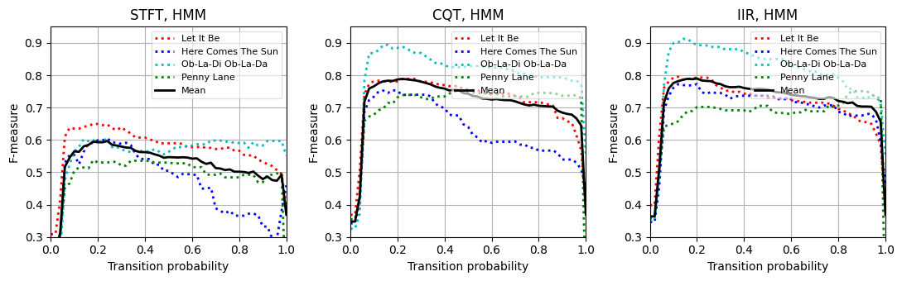
음악적 관련성
클래스 불균형(Class Imbalance)
이전에 이미 언급했듯이 자동화된 화성 분석 및 참조 주석을 기반으로 한 평가는 일반적으로 상당히 단순화된다. 따라서 평가 측정(예: F-measure)은 알고리즘의 성능과 인식 결과의 음악적 관련성에 대해 매우 제한된 관점만 제공한다.
구체적인 예로서 노래의 일부 전면적 통계를 기반으로 단일 장, 단3화음을 결정하고 모든 시간 프레임에 해당하는 화음 라벨을 출력하는 다소 둔한 화음 인식기를 고려해 보자.
- 노래 “Ob-La-Di, Ob-La-Da”의 경우, 이 접근법은 노래의 키 \(\mathrm{B}^\flat\) major를 인식하고 tonic 화음 \(\mathrm{B}^\flat\)에 대해 노래에 대한 동일한 화음 라벨을 전체 길이 동안 출력할 수 있다.
다음 코드 셀에서 볼 수 있듯이 이 절차는 \(\mathrm{F}=0.551\)의 F-점수를 달성한다. 특히 CQT 기반 크로마그램을 사용하는 템플릿 기반 접근 방식이 \(\mathrm{F}=0.503\)의 정확도만 달성한다는 점을 고려할 때 이는 나쁘지 않은 것 같다.
- 그렇다면 \(\mathrm{F}=0.551\) 값은 무엇을 의미할까?
- 이 단조로운 절차가 템플릿 기반 접근 방식보다 “더 나은” 것인가?
화음 라벨링 작업을 해결하는 대신, 이 단순한 인식기는 가장 흔한 화음 발생에 대한 해당 데이터의 통계에 대해 더 많은 정보를 알려준다.
일반적으로 평가 결과를 보다 잘 평가하기 위해서는 데이터 분포에 대한 정보를 포함하는 것이 중요하다.
특히 클래스 분포의 불균형(imbalance) 은 분류(classification) 접근 방식의 실제 성능에 대해서는 어떤 것도 이야기 할 수 없지만, 매우 높은 평가 측정이 나올 수 있다.
이 논의를 마무리하기 위해, HMM 기반 접근법이 \(\mathrm{F}=0.895\)의 F-측정값을 생성한다는 점에 주목하자. 이는 위의 단순한 접근법의 \(\mathrm{F}=0.551\)보다 훨씬 높다.
시각화에서 볼 수 있듯이(예: \(1700\)와 \(2000\) 프레임 사이의 섹션 참조) HMM 기반 접근 방식은 템플릿 기반 접근 방식의 일부 오류를 수정한다. 여기서 메이저 화음 \(\mathrm{E}^\flat\) (참조)는 마이너 화음 \(\mathrm{E}^\flat\mathrm{m}\) (추정)과 혼동된다.
이러한 “장-단 화음 혼동”은 자동화된 절차에서 발생하는 가장 일반적인 인식 오류 중 하나이다.
- 이러한 혼동은 두 개의 3화음이 3개 음 중 2개인 근음(root note)과 5도(fifth)를 공유한다는 사실에 기인한다. 일반적으로 조화 부분음의 존재로 인해 더 많은 혼란이 발생할 수 있다(예: 근음의 5번째 배음은 장3도와 같음).
song_selected = [2]
for s in song_selected:
output = chord_recognition_all(X_dict_CQT[s], ann_dict_CQT[s][0], p=0.15)
result_Tem, result_HMM, chord_Tem, chord_HMM, chord_sim = output
chord_dull = np.zeros(chord_Tem.shape)
chord_dull[10, :] = 1
result_dull = compute_eval_measures(ann_dict_CQT[s][0], chord_dull)
title='Song: %s [CQT; Dull]' % song_dict[s][0]
plot_chord_recognition_result(ann_dict_CQT[s][0], result_dull,
chord_dull, chord_labels, title=title)
title='Song: %s [CQT; Template]' % song_dict[s][0]
plot_chord_recognition_result(ann_dict_CQT[s][0], result_Tem,
chord_Tem, chord_labels, title=title)
title='Song: %s [CQT; HMM]' % song_dict[s][0]
plot_chord_recognition_result(ann_dict_CQT[s][0], result_HMM,
chord_HMM, chord_labels, title=title)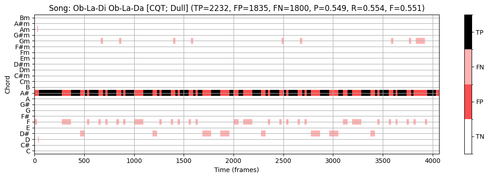
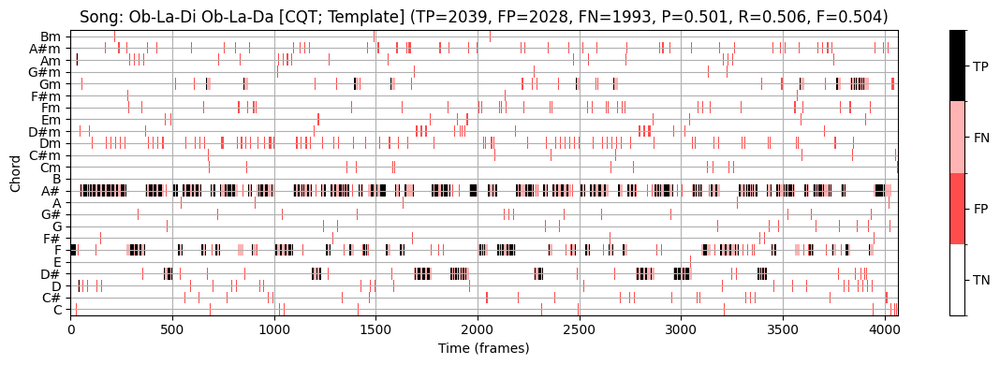
화음 라벨 감소
화음 인식 방식의 또 다른 주요 문제는 \(12\) 장조 및 \(12\) 단조 3화음에 해당하는 \(24\) 화음 클래스로만 제한된다는 것이다.
보다 일반적인 설정을 설명하기 위해 참조 주석에 사용되는 다른 코드 유형(예: 7도, 증가(augmented) 및 감소(diminished) 화음)을 장조 및 단조 3화음으로 줄였다. 이하에서는 이 변환을 트라이어드(=3화음) 축소 (triad reduction) 라고 하자.
하나의 명백한 물음은 화음 인식 오류가 그러한 화음 유형 축소가 사용된 악절에서 더 자주 발생하는지 여부이다.
이 질문을 조사하기 위해 \(24\) 장,단3화음에 포함되지 않은 화음 유형을 비화음(non-chord) 라벨 \(\mathbf{N}\)로 대체하는 두 번째 축소 표현을 고려해본다. 이하에서는 이 변환을 비화음 축소(non-chord reduction) 라고 하자.
예를 들어, 원래 참조 주석에서 이러한 추가 화음 유형이 많이 발생하는 노래 “Penny Lane”을 보자. 다음 그림에서 결과적인 3화음 축소와 비화음 축소(비화음 라벨 \(\mathbf{N}\)가 흰색으로 표시됨)를 보여준다.
for s in [3]:
song_id = song_dict[s][0]
fn_ann = song_dict[s][3]
fn_ann_orig = fn_ann.replace('_simplified', '')
# Read original annotation (Harte) and triad-reduced annotation
ann_orig, _ = read_structure_annotation(fn_ann_orig)
ann, _ = read_structure_annotation(fn_ann)
# Replace in original annotation all labels that were reducued by non-chord label
for k in range(len(ann)):
if ann[k][2] != ann_orig[k][2]:
ann_orig[k][2] = 'N'
plot_segments(ann, figsize=(12, 1.2), time_label='Time (seconds)',
print_labels=False, colors=color_ann, alpha=1)
plt.title('Song: %s: Triad reduction' % song_id)
plt.show()
plot_segments(ann_orig, figsize=(12, 1),
print_labels=False, colors=color_ann, alpha=1)
plt.title('Song: %s: Non-chord reduction' % song_id)
plt.show()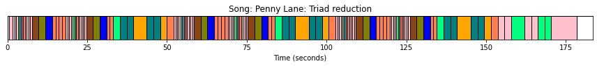
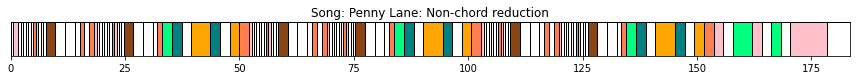
- 다음으로, 3화음 축소에 기반한 참조 주석을 한 번 사용하고, 비화음 축소에 기반한 주석을 한 번 사용하여 HMM 기반 화음 인식 접근 방식을 평가해보자.
- 아이템 \((n, \lambda)\)는 세트 \(\mathcal{I}=[1:N]\times \Lambda\)의 요소이다. 이 규칙에서 화음이 아닌 라벨 \(\mathbf{N}\)는 고려되지 않은 상태로 남는다.
- 결과적으로 관련(relevant)(또는 양수) 아이템은 \((n, \lambda^\mathrm{Ref}_{n})\)와 \(\lambda^\mathrm{Ref}_{n}\not=\mathbf{N}\)의 쌍이다.
- HMM 기반 화음 인식 접근 방식은 각 프레임 \(n\in[1:N]\)에 대한 추정 \(\lambda_{n}\in\Lambda\)를 생성하므로, 쌍 \((n,\lambda_{n})\)는 참조 주석의 프레임이 \(\lambda^\mathrm{Ref}_{n}=\mathbf{N}\)인 경우 false positive으로 계산된다.
이를 염두에 두고 다음 그림에 표시된 화음 인식 결과를 살펴보자.
- 3화음 축소에 기반한 참조 주석을 사용하여 precision \(\mathrm{P}=0.704\), recall \(\mathrm{R}=0.726\) 및 F-측정값 \(\mathrm{F}=0.715\)를 얻는다.
- 비화음 축소에 기반한 참조 주석을 사용하여 \(\mathrm{P}=0.485\), \(\mathrm{R}=0.925\) 및 \(\mathrm{F}=0.636\)를 얻는다.
recall의 증가는 축소된 화음 라벨에 대해 화음 인식 오류가 종종 발생한다는 가설을 정확히 뒷받침한다.
precision 감소는 화음 인식기가 모든 프레임 \(n\in[1:N]\)에 대해 화음 라벨 \(\lambda_n\in\Lambda\)를 출력하기 때문이다.
이 결과는 예를 들어 모든 \(24\) 화음 라벨의 출력 확률이 특정 임계값 아래로 떨어지는 경우, 화음 인식기가 비화음의 라벨도 출력하도록 허용함으로써 개선될 수 있다.
song_selected = [3]
for s in song_selected:
output = chord_recognition_all(X_dict_CQT[s], ann_dict_CQT[s][0], p=0.15)
result_Tem, result_HMM, chord_Tem, chord_HMM, chord_sim = output
song_id = song_dict[s][0]
fn_ann = song_dict[s][3]
fn_ann_orig = fn_ann.replace('_simplified', '')
ann_orig, _ = read_structure_annotation(fn_ann_orig)
output = convert_chord_ann_matrix(fn_ann_orig, chord_labels, Fs=Fs_X_dict_CQT[s],
N=X_dict_CQT[s].shape[1], last=False)
ann_matrix_N = output[0]
output = chord_recognition_all(X_dict_CQT[s], ann_matrix_N, p=0.15)
result_Tem_N, result_HMM_N, chord_Tem_N, chord_HMM_N, chord_sim_N = output
title = 'Triad reduction: %s [CQT; HMM] ' % song_dict[s][0]
plot_chord_recognition_result(ann_dict_CQT[s][0], result_HMM, chord_HMM, chord_labels, title=title)
title = 'Non-chord label: %s [CQT; HMM] ' % song_dict[s][0]
plot_chord_recognition_result(ann_matrix_N, result_HMM_N, chord_HMM_N, chord_labels, title=title)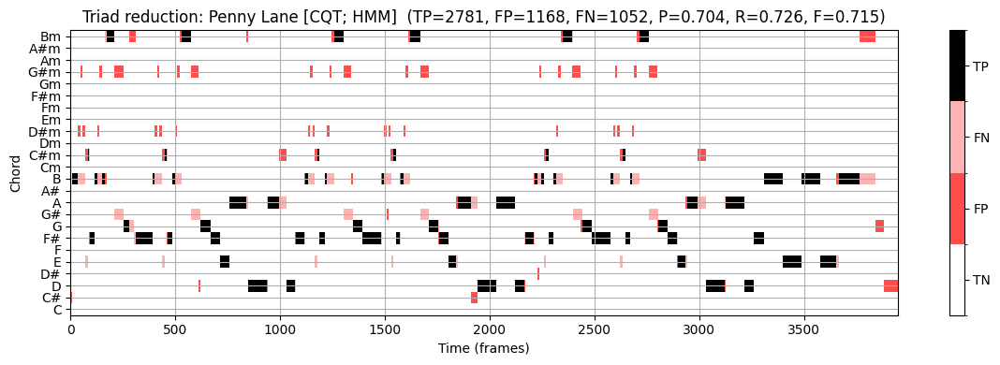
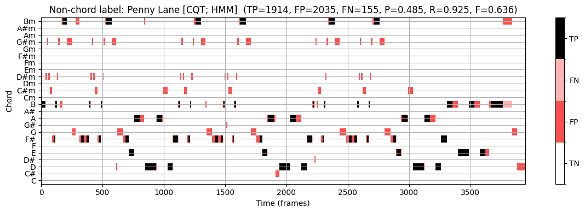
결론
요약하면, 시간적 피쳐 스무딩(temporal feature smoothing)은 순전히 프레임 별로 작동하는 화음 인식기의 전체 평가 측정을 개선하는 쉬운 방법이라고 말할 수 있다. 그러나 “최적” 스무딩 길이는 화음 지속 시간 분포에 따라 크게 달라진다.
고정 길이의 평균화 필터를 사용하는 대신, 음악적으로 정보를 얻은 적응형 분할 기술(adaptive segmentation techniques)을 사용하는 것이 대안이다. 예를 들어 화음 변경은 종종 비트(beat) 위치와 함께 진행된다. 따라서 beat-synchronous 방식으로 필터링을 수행할 수 있다. 여기서 각 분석 윈도우는 두 개의 연속 비트 위치에 의해 결정된다. 그러나 자동화된 방법으로 비트 위치를 찾는 것은 그 자체로 어려운 작업이기도 하다.
분류 단계 이전에 특징을 수정하는 대신 또 다른 일반적인 접근 방식은 HMM 기반 접근 방식과 정확히 일치하는 패턴 매칭 단계 내에서 일종의 필터링을 수행하는 것이다. 사후 필터링(HMM 사용)과 사전 필터링(피처 스무딩 사용)의 조합이 전체 인식 결과를 크게 개선하지 않는다는 것을 확인했다.
비틀즈 컬렉션에는 중심 주파수가 \(440~\mathrm{Hz}\)인 예상 참고 피치 \(\mathrm{A4}\)에서 벗어난 곡들이 다수 있다. 이러한 편차는 화음 인식기에 대한 입력 역할을 하는 크로마그램의 품질에 치명적인 결과를 초래할 수 있다. 따라서 화음 인식 시스템에서 중요한 단계 중 하나는 튜닝 추정(tuning estimation)을 수행하여 튜닝 효과를 보상한 다음, 주파수 축의 피치 기반 로그 분할에 사용되는 중심 주파수를 조정하는 것이다.
비틀즈 컬렉션은 단 하나의 록 밴드로 제한되지만, 이 데이터 세트를 실험하는 것은 화음 인식 시스템을 개발하고 비교할 때 매우 유익할 수 있다. 특히 데이터 기반 기술(예: 최근 딥 러닝 기술)을 사용하는 경우 데이터 세트를 훈련(training) 세트, 검증(validation) 세트 및 테스트(test) 세트라는 분리된 하위 집합으로 분할하는 것이 중요하다. 훈련 세트를 사용하여 화음 템플릿을 조정하거나 특정 HMM 매개변수를 학습할 수 있다. 검증 세트는 예를 들어 HMM 아키텍처를 결정하는 하이퍼파라미터를 조정하는 데 사용될 수 있다. 마지막으로 테스트 세트는 최종 시스템을 테스트하고 평가하는 데 사용한다.
데이터 세트 분할에 대한 전체 절차의 종속성을 줄이기 위해 종종 여러 라운드의 교차 검증(cross-validation) 을 수행한다. 한 가지 방법은 데이터 세트를 동일한 크기의 \(K\) 하위 집합(소위 fold)으로 임의로 분할하는 것이다. 하위 집합 중 하나는 테스트 집합으로 사용되는 반면 다른 \(K-1\) 하위 집합의 합집합은 훈련 및 검증 집합으로 사용된다. 교차 검증은 테스트 세트로 정확히 한 번 제공되는 각 \(K\) 하위 집합으로 \(K\) 번 반복된다. 그런 다음 \(K\) 결과는 예를 들어 고려된 평가 척도의 평균을 취하여 결합되어 단일 추정치를 형성한다. 일반적으로 \(K\)-fold 교차 검증 으로 알려진 이 접근 방식은 일종의 훈련이 포함된 화음 인식 절차를 평가하는 데 자주 사용된다.
출처:
- https://www.audiolabs-erlangen.de/resources/MIR/FMP/C5/C5S3_ChordRec_Beatles.html
\(\leftarrow\) 6.3. HMM 기반 화음 인식